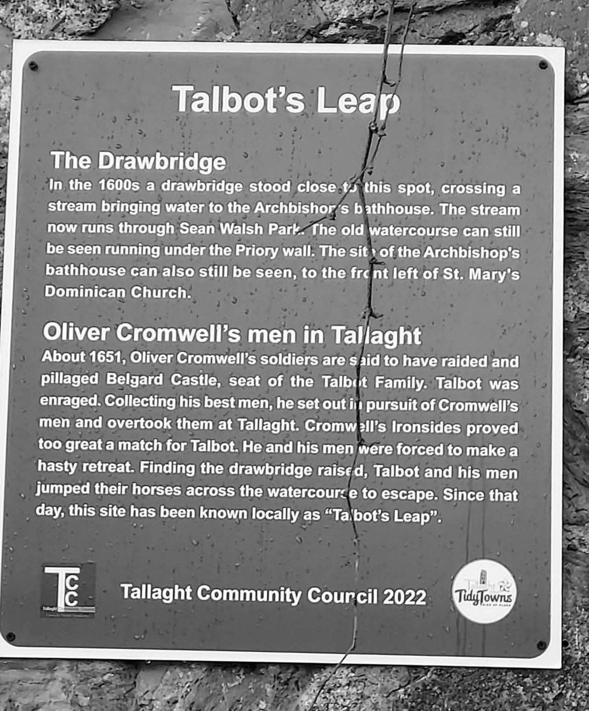
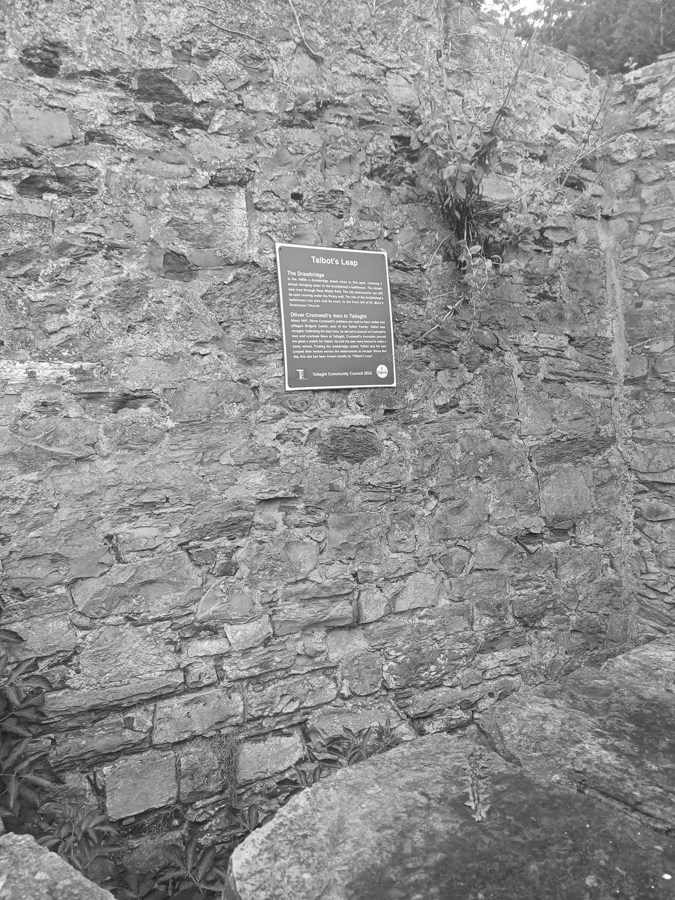
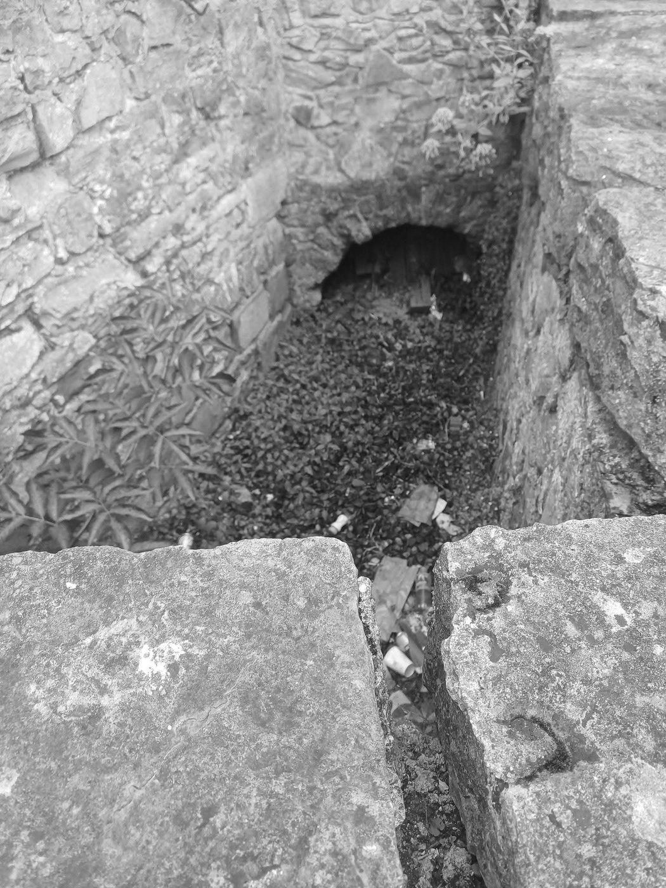

Stop 2 of 16 · Tallaght
Bancroft
The first stretch of the river you can walk beside.
Bancroft Castle
The name Bancroft comes from the castle that once stood at the present junction of Greenhills Road and Tallaght Village.
The castle’s history is uncertain, but its lands formed part of the wider Tymon estate.
Bancroft Park
Bancroft Park, a northern extension of Tymon Park, is the first publicly accessible section of the Poddle. Upstream of here, the channel runs through the grounds of Technological University Dublin.
Nearby: Talbot’s Leap
A short walk away, just off Tallaght’s main street by the old walls of St Mary’s Dominican Priory, a plaque put up by Tallaght Community Council in 2022 marks a spot called Talbot’s Leap. It is a reminder that water shaped Tallaght village too.
In the 1600s, the plaque says, a drawbridge stood here over a stream that carried water to the Archbishop of Dublin’s bathhouse. The archbishops had a castle and later a palace at Tallaght; the priory now stands on its site and keeps its old tower. The stream now runs through Sean Walsh Park, but its old stone channel can still be seen running under the priory wall, and the site of the bathhouse is to the front left of the Dominican church.
The story goes back to the Cromwellian wars. The Talbots of Belgard Castle, a branch of the great Norman family that also held Malahide, were Catholic royalists who fought against Cromwell; Belgard was ruined in the war and John Talbot followed Charles II into exile. Around 1651, the plaque says, Cromwell’s soldiers raided and plundered Belgard. Talbot gathered his best men, chased them and caught up with them at Tallaght, but the Ironsides were too strong. Retreating, he found the drawbridge raised, and he and his men jumped their horses across the watercourse to escape. William Handcock, writing in the 1870s, tells the same tradition and places the leap “where the little stream now crosses the road, as you go up to the church”.
This is local tradition, not recorded history. Cromwell himself is not known to have come to Tallaght, though his soldiers certainly did: in 1651 a Captain Alland was quartered there, stripped the roof, timber and pews from St Maelruain’s church for his own buildings, and, so the story goes, fed his horses from the church’s stone font. The parish was paid £100 in compensation in 1662.
The Talbots survived the Commonwealth. After the Restoration John Talbot recovered at least part of the Belgard estate and rebuilt the castle. He fought for James II at the Boyne, Aughrim and Limerick, was covered by the Articles of Limerick, and retired to Belgard. He had no son, and through his daughter Catherine’s marriage the house passed to the Dillons. Colonel John Talbot of Belgard is buried in St Maelruain’s churchyard; accounts differ on whether he was a captain or a colonel, and on the year he died.
Older than the castle
The heritage chapter of the flood scheme’s environmental report says that stray prehistoric finds from the Bancroft and Dodder river areas of Tallaght village point to early occupation. Two bronze artefacts, found in 1973, came from Bancroft Grove, about 250 m south of Tymon Park.
The same chapter records that nothing of archaeological significance was found when Bancroft Park was monitored in 2003, and that no recorded prehistoric sites lie within the area of the scheme itself.
Watch and read
From the planning file
Facts from the flood scheme’s planning application and four local planning files.




